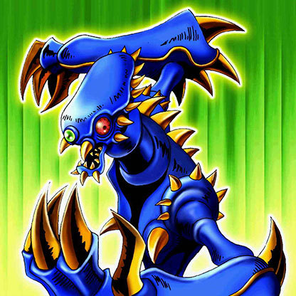

Hannibal Necromancer

Description: "When this card is flipped face-up, all ZOMBIE monsters are increased by 300 points."
STATS
ATK: 1400
DEF: 1800DECK COST
Deck Cost per Card: 37EFFECT NOT IMPLEMENTED
Fusion List (2 Possible Fusions)
- Hannibal Necromancer + Electric Snake = The Immortal of Thunder
- Hannibal Necromancer + Thunder Dragon = Kaminari Attack